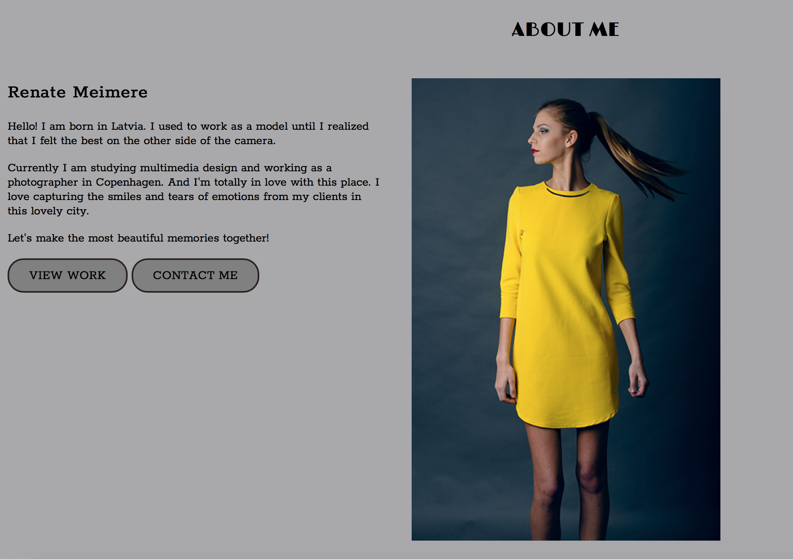
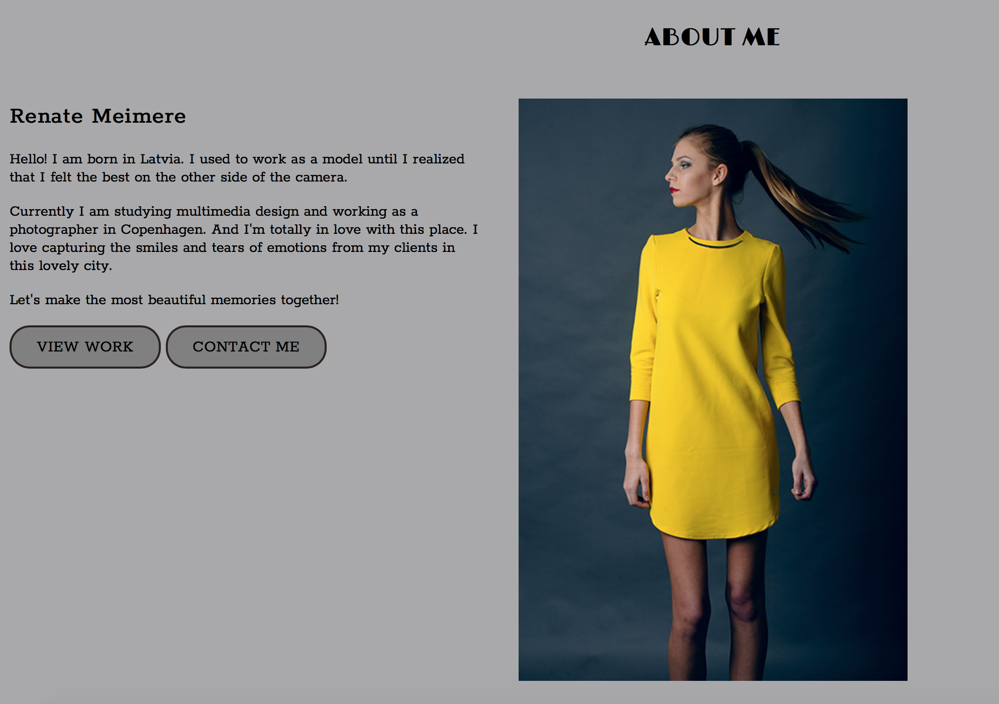
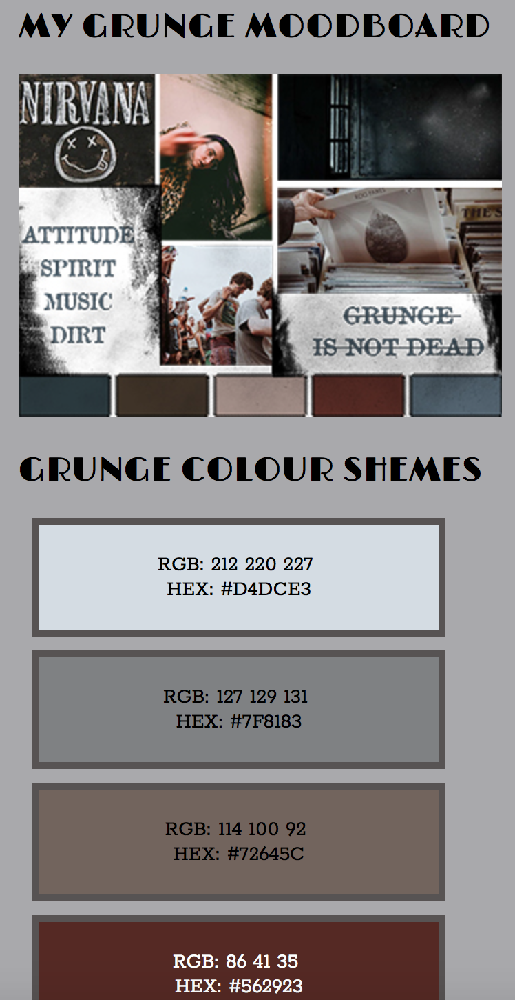
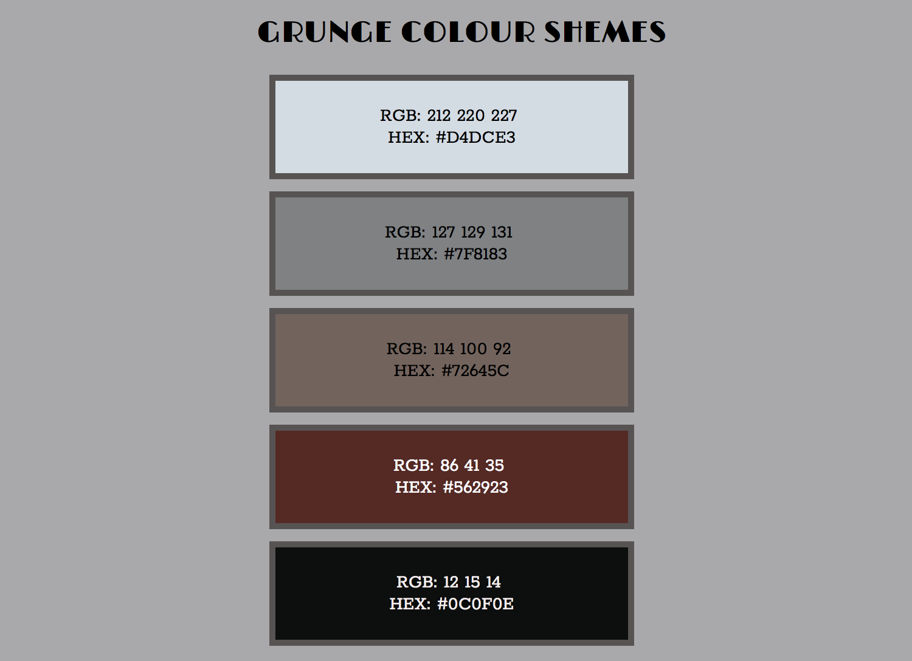
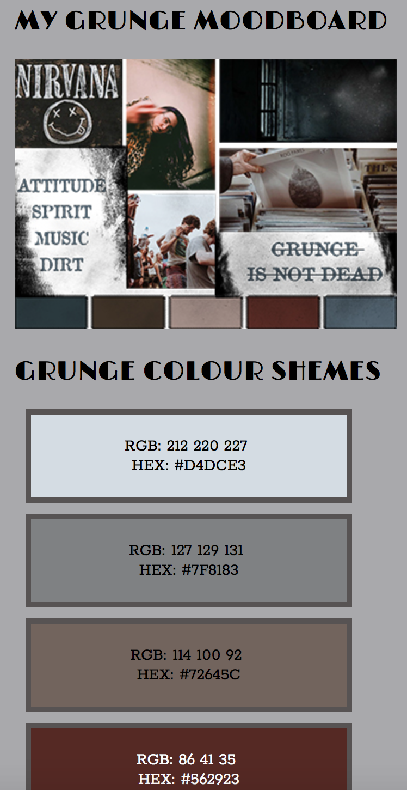
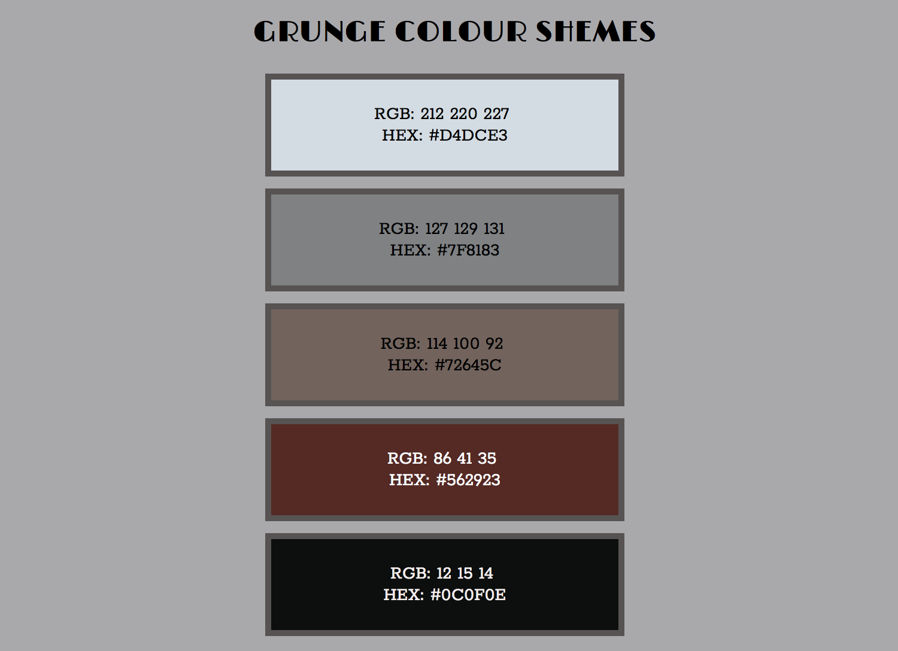

Responsive website
Our first project was to build our own website. Each of us gave one style. I had to create a website in the style of grunge.
I learned how to make a responsive website. Now I know what is breakpoints in CSS, how to use CSS grids. I learned what is header, footer, navigation (burger menu). After this project, I know how to validate HTML and CSS.
These are only the main things which I learned. If I had to write all the things I learned after this project, it would take all day. And time is money, so let's the pictures talk. And if you want to see the final result of my grunge website, click here:
Client: KEA
My role: Coding, Design
 

 

let's go back to basic web


let's go back to basic web